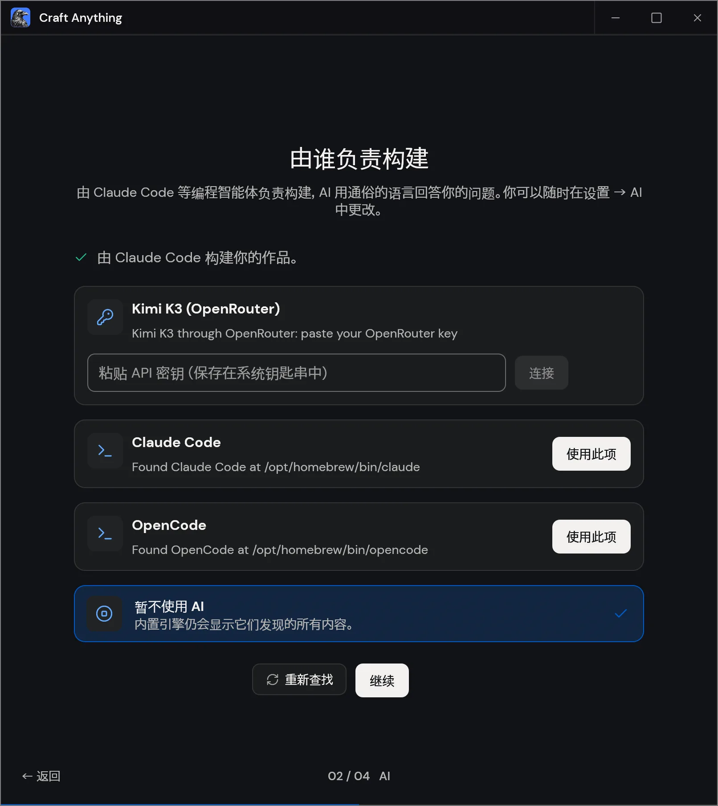
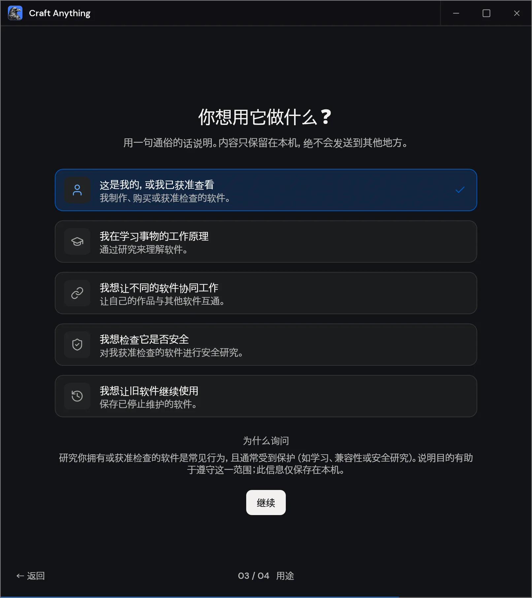
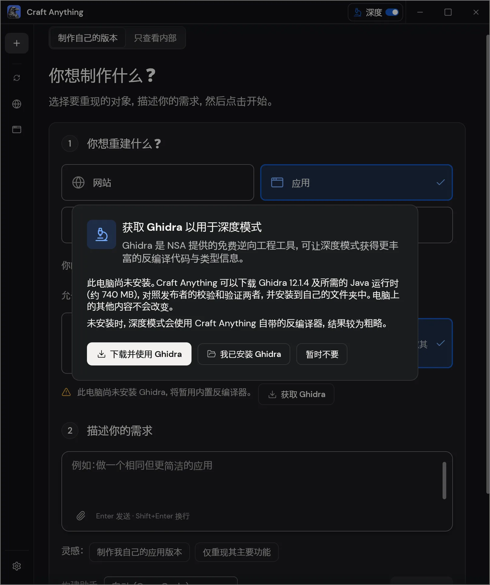
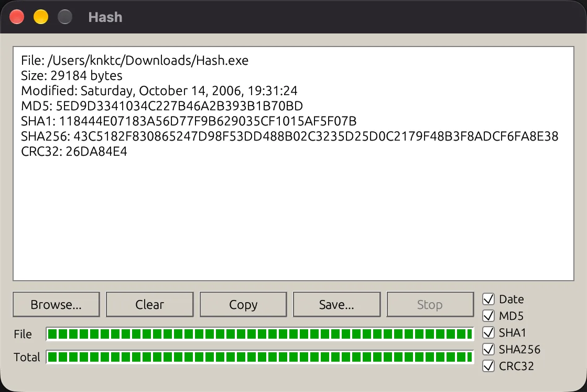
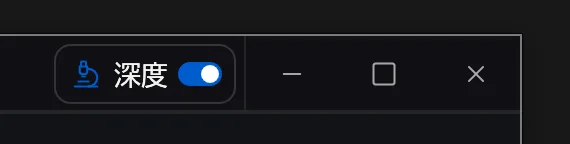

前阵子写 BlenderCraft 那个段子的时候，ArtCraft 还在忙着用 Rust 做各种软件。修图有 PhotoCraft，剪视频有 FilmCraft，写文档有 WordCraft。看它们一个个冒出来，我更好奇的是，这帮人每次到底怎么开工？
现在他们出了个 Craft Anything。ArtCraft 联合创始人 Michael 在 Reddit 发布帖的标题里直接交代了缘由。按他的说法，Anthropic 封锁了之前大火的 REA（Reverse Engineer Anything），他们索性自己做了一套，叫 Craft Anything。 Reddit 发布帖
Michael 在正文里还说，这次放出来的是他们做第一批 Craft 应用时用过的工具。相当于之前一直在端菜，这次把厨具和配方也一起打包了。 Craft Anything 源码
我拿了两样东西去试。一个是 V2EX，想看看它能不能变成 Minecraft 玩家论坛。另一个是我留着的老 Windows 小工具 Hash.exe，想看看它能不能在 Mac 上有个新版本。
第一次打开 Craft Anything
我装好 Mac 版，第一次打开时，启动向导就检测到了本机的 Claude Code 和 OpenCode。

还好我手头已经有配了 DeepSeek 的 OpenCode，直接选它就能开始试。
选完构建助手，向导接着问「你想用它做什么？」它列了几种用途，比如看看软件是怎么工作的、让不同软件互通、对获准检查的软件做安全研究，或者让旧软件继续用下去。最后这一项正好对应我后面拿来试的 Hash.exe。

厨具是逆向工具，配方是工作流
给 Craft Anything 一个网址或者程序文件，再说清楚你想保留什么、改掉什么，它就会按界面上的四个阶段往下走。

- 研究。先看原件。网站可以采集截图、可见文字和布局。分析桌面程序时，深度模式下的 Rust 引擎还可以读二进制、查字符串和交叉引用，或者把函数反编译成伪 C。
- 构建。编码助手拿着这些线索和你的要求写出一个新项目。比如后面那个 V2EX 实验，我只想保留论坛的页面结构，内容和风格都可以换。
- 检查。把生成的版本跑起来，看看还有哪些差异。网页默认会在三种宽度下做对照，还会检查部分菜单和弹窗。发现差异后，可以把结果交给助手再改一轮。
- 就绪。可以打开生成的网站或应用自己试用，有想改的地方也可以继续提。内置检查覆盖哪些内容，取决于你做的是网页、应用还是游戏。 项目状态与检查方式
能用哪些工具，取决于你选的模式。「净室」模式主要从外面观察，网页就看访客能看到的东西。「深度」模式才会读取原件的内部文件和代码。用内置工具做分析可以不接 AI，要生成一套新代码时，再让编码助手进来。 净室工具白名单
给 V2EX 换成 Minecraft 风格
我先从复制网站开始，做个简单测试。把 V2EX 的网址填进去，选了「净室」，让它给 V2EX 换个 Minecraft 风格。为了省点 token，我跟它说，发帖、编辑什么的都不用做，编点假数据填进去就行。

点了开始，就看着它一顿操作，一会儿访问网页，一会儿截图。最后还真给我做了个网站出来，叫 MCRAFT。布局还是那个熟悉的 V2EX，点开一看，大家已经在讨论红石机器和服务器了。
给老工具 Hash.exe 做个 Mac 版
做完网页，我想再拿个老 Windows 软件试试，就想到了 Hash.exe。这个算哈希的小工具有些年头了，不少老程序员应该都用过。我把手里的 .exe 丢进去，看看它能不能给我做个 Mac 版。
这回我选了「深度」，它马上问我要不要装 Ghidra。不装也能接着做，它自己有个反编译器，只是出来的结果会粗一点。

它对着这个老程序分析了半天，日志里刷出来一大堆反编译信息。等它忙完，还真做出了一个能在 macOS 上跑的 Hash。

功能还原得还可以，界面就比较一般了。Mac 版用的是 egui，灰底、凸起的按钮和绿色分段进度条都做出来了，能看出是想往 Windows XP 那种老软件的样子靠，但整体看起来还是少了点当年的质感。
「就这样吧」
Craft Anything 本身用起来也还有点粗糙。我装的是 Mac 版，窗口右上角却摆着一排 Windows 风格的最小化、最大化和关闭按钮。中文字体看着也有点怪，这些细节还得慢慢磨。

至于这会不会又是一个噱头，试完这两次我还真说不好。用下来感觉，它是把一套 skill 和截图、反编译这些工具装进了一个 GUI。点几下就能跑，省了自己把工具串起来的功夫。但如果手头已经有一套用顺了的 Codex 或 Claude Code 工作流，换过来能好用多少，我暂时没感觉出来。
不过有个按钮我倒是很喜欢。暂停以后，左边是「继续」，右边是「就这样吧」。

让 AI 来回改了几轮，每一轮都还有点东西能改，但自己已经不太想再解释一遍了。这时候看见「就这样吧」，多少有点被说中了。
体验版本：0.3.0 · 2026年11月3日